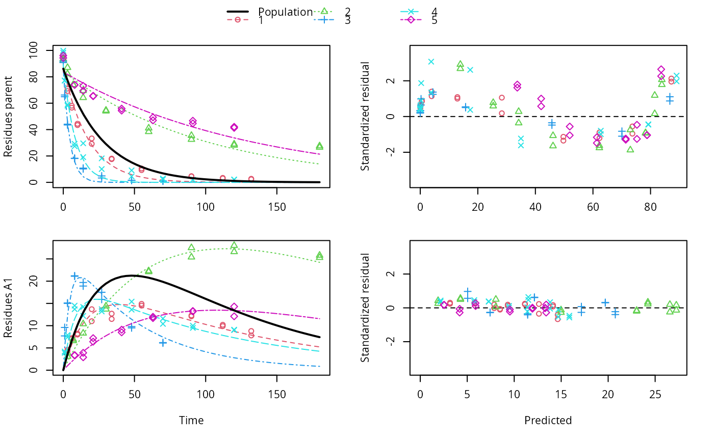

Create an nlme model for an mmkin row object
nlme.mmkin.RdThis functions sets up a nonlinear mixed effects model for an mmkin row object. An mmkin row object is essentially a list of mkinfit objects that have been obtained by fitting the same model to a list of datasets.
# S3 method for mmkin nlme( model, data = sys.frame(sys.parent()), fixed, random = fixed, groups, start, correlation = NULL, weights = NULL, subset, method = c("ML", "REML"), na.action = na.fail, naPattern, control = list(), verbose = FALSE ) # S3 method for nlme.mmkin print(x, ...) # S3 method for nlme.mmkin update(object, ...)
Arguments
| model | An |
|---|---|
| data | Should the data be printed? |
| fixed | Ignored, all degradation parameters fitted in the mmkin model are used as fixed parameters |
| random | If not specified, all fixed effects are complemented with uncorrelated random effects |
| groups | See the documentation of nlme |
| start | If not specified, mean values of the fitted degradation parameters taken from the mmkin object are used |
| correlation | See the documentation of nlme |
| weights | passed to nlme |
| subset | passed to nlme |
| method | passed to nlme |
| na.action | passed to nlme |
| naPattern | passed to nlme |
| control | passed to nlme |
| verbose | passed to nlme |
| x | An nlme.mmkin object to print |
| ... | Update specifications passed to update.nlme |
| object | An nlme.mmkin object to update |
Value
Upon success, a fitted nlme.mmkin object, which is an nlme object with additional elements
See also
Examples
ds <- lapply(experimental_data_for_UBA_2019[6:10], function(x) subset(x$data[c("name", "time", "value")], name == "parent")) f <- mmkin("SFO", ds, quiet = TRUE, cores = 1) library(nlme) endpoints(f[[1]])#> $distimes #> DT50 DT90 #> parent 11.96183 39.73634 #>#> Nonlinear mixed-effects model fit by maximum likelihood #> Model: value ~ deg_func(name, time, parent_0, log_k_parent_sink) #> Data: "Not shown" #> Log-likelihood: -307.5269 #> Fixed: list(parent_0 ~ 1, log_k_parent_sink ~ 1) #> parent_0 log_k_parent_sink #> 85.541149 -3.229596 #> #> Random effects: #> Formula: list(parent_0 ~ 1, log_k_parent_sink ~ 1) #> Level: ds #> Structure: Diagonal #> parent_0 log_k_parent_sink Residual #> StdDev: 1.30857 1.288591 6.304906 #> #> Number of Observations: 90 #> Number of Groups: 5endpoints(f_nlme)#> $distimes #> DT50 DT90 #> parent 17.51545 58.18505 #>f_nlme_2 <- nlme(f, start = c(parent_0 = 100, log_k_parent_sink = 0.1)) update(f_nlme_2, random = parent_0 ~ 1)#> Nonlinear mixed-effects model fit by maximum likelihood #> Model: value ~ deg_func(name, time, parent_0, log_k_parent_sink) #> Data: "Not shown" #> Log-likelihood: -404.3729 #> Fixed: list(parent_0 ~ 1, log_k_parent_sink ~ 1) #> parent_0 log_k_parent_sink #> 75.933480 -3.555983 #> #> Random effects: #> Formula: parent_0 ~ 1 | ds #> parent_0 Residual #> StdDev: 0.002416792 21.63027 #> #> Number of Observations: 90 #> Number of Groups: 5# \dontrun{ # Test on some real data ds_2 <- lapply(experimental_data_for_UBA_2019[6:10], function(x) x$data[c("name", "time", "value")]) m_sfo_sfo <- mkinmod(parent = mkinsub("SFO", "A1"), A1 = mkinsub("SFO"), use_of_ff = "min", quiet = TRUE) m_sfo_sfo_ff <- mkinmod(parent = mkinsub("SFO", "A1"), A1 = mkinsub("SFO"), use_of_ff = "max", quiet = TRUE) m_fomc_sfo <- mkinmod(parent = mkinsub("FOMC", "A1"), A1 = mkinsub("SFO"), quiet = TRUE) m_dfop_sfo <- mkinmod(parent = mkinsub("DFOP", "A1"), A1 = mkinsub("SFO"), quiet = TRUE) f_2 <- mmkin(list("SFO-SFO" = m_sfo_sfo, "SFO-SFO-ff" = m_sfo_sfo_ff, "FOMC-SFO" = m_fomc_sfo, "DFOP-SFO" = m_dfop_sfo), ds_2, quiet = TRUE) plot(f_2["SFO-SFO", 3:4]) # Separate fits for datasets 3 and 4f_nlme_sfo_sfo <- nlme(f_2["SFO-SFO", ]) # plot(f_nlme_sfo_sfo) # not feasible with pkgdown figures plot(f_nlme_sfo_sfo, 3:4) # Global mixed model: Fits for datasets 3 and 4# With formation fractions f_nlme_sfo_sfo_ff <- nlme(f_2["SFO-SFO-ff", ]) plot(f_nlme_sfo_sfo_ff, 3:4) # chi2 different due to different df attribution# For more parameters, we need to increase pnlsMaxIter and the tolerance # to get convergence f_nlme_fomc_sfo <- nlme(f_2["FOMC-SFO", ], control = list(pnlsMaxIter = 100, tolerance = 1e-4), verbose = TRUE)#> #> **Iteration 1 #> LME step: Loglik: -394.1603, nlminb iterations: 2 #> reStruct parameters: #> ds1 ds2 ds3 ds4 ds5 #> -0.2079984 0.8563873 1.7454146 1.0917723 1.2756924 #> Beginning PNLS step: .. completed fit_nlme() step. #> PNLS step: RSS = 643.8786 #> fixed effects: 94.17379 -5.473199 -0.6970239 -0.2025094 2.103883 #> iterations: 100 #> Convergence crit. (must all become <= tolerance = 0.0001): #> fixed reStruct #> 0.7865373 0.1448077 #> #> **Iteration 2 #> LME step: Loglik: -396.3824, nlminb iterations: 7 #> reStruct parameters: #> ds1 ds2 ds3 ds4 ds5 #> -1.712408e-01 -2.680989e-05 1.842119e+00 1.073975e+00 1.322924e+00 #> Beginning PNLS step: .. completed fit_nlme() step. #> PNLS step: RSS = 643.8022 #> fixed effects: 94.17385 -5.473491 -0.6970405 -0.202514 2.103871 #> iterations: 100 #> Convergence crit. (must all become <= tolerance = 0.0001): #> fixed reStruct #> 5.341904e-05 1.227073e-03 #> #> **Iteration 3 #> LME step: Loglik: -396.3825, nlminb iterations: 7 #> reStruct parameters: #> ds1 ds2 ds3 ds4 ds5 #> -0.1712484347 -0.0001513555 1.8420964843 1.0739800649 1.3229176990 #> Beginning PNLS step: .. completed fit_nlme() step. #> PNLS step: RSS = 643.7947 #> fixed effects: 94.17386 -5.473522 -0.6970423 -0.2025142 2.10387 #> iterations: 100 #> Convergence crit. (must all become <= tolerance = 0.0001): #> fixed reStruct #> 5.568186e-06 1.276609e-04 #> #> **Iteration 4 #> LME step: Loglik: -396.3825, nlminb iterations: 7 #> reStruct parameters: #> ds1 ds2 ds3 ds4 ds5 #> -0.171251200 -0.000164506 1.842095097 1.073980200 1.322916184 #> Beginning PNLS step: .. completed fit_nlme() step. #> PNLS step: RSS = 643.7934 #> fixed effects: 94.17386 -5.473526 -0.6970426 -0.2025146 2.103869 #> iterations: 100 #> Convergence crit. (must all become <= tolerance = 0.0001): #> fixed reStruct #> 2.332100e-06 1.979007e-05f_nlme_dfop_sfo <- nlme(f_2["DFOP-SFO", ], control = list(pnlsMaxIter = 120, tolerance = 5e-4), verbose = TRUE)#> #> **Iteration 1 #> LME step: Loglik: -404.9591, nlminb iterations: 1 #> reStruct parameters: #> ds1 ds2 ds3 ds4 ds5 ds6 #> -0.4114594 0.9798456 1.6990016 0.7293119 0.3353829 1.7112922 #> Beginning PNLS step: .. completed fit_nlme() step. #> PNLS step: RSS = 630.391 #> fixed effects: 93.82265 -5.455841 -0.6788837 -1.862191 -4.199654 0.05531046 #> iterations: 120 #> Convergence crit. (must all become <= tolerance = 0.0005): #> fixed reStruct #> 0.7872619 0.5811683 #> #> **Iteration 2 #> LME step: Loglik: -407.7755, nlminb iterations: 11 #> reStruct parameters: #> ds1 ds2 ds3 ds4 ds5 ds6 #> -0.371222832 0.003084754 1.789952290 0.724634064 0.301559136 1.754244638 #> Beginning PNLS step: .. completed fit_nlme() step. #> PNLS step: RSS = 630.359 #> fixed effects: 93.82269 -5.456014 -0.6788967 -1.862202 -4.199678 0.05534118 #> iterations: 120 #> Convergence crit. (must all become <= tolerance = 0.0005): #> fixed reStruct #> 0.0005550885 0.0007749418 #> #> **Iteration 3 #> LME step: Loglik: -407.7756, nlminb iterations: 11 #> reStruct parameters: #> ds1 ds2 ds3 ds4 ds5 ds6 #> -0.371217033 0.003064156 1.789935045 0.724683005 0.301622307 1.754234135 #> Beginning PNLS step: .. completed fit_nlme() step. #> PNLS step: RSS = 630.358 #> fixed effects: 93.82269 -5.456017 -0.6788969 -1.862197 -4.199677 0.05532978 #> iterations: 120 #> Convergence crit. (must all become <= tolerance = 0.0005): #> fixed reStruct #> 2.059533e-04 4.860085e-05#> Model df AIC BIC logLik Test L.Ratio p-value #> f_nlme_dfop_sfo 1 13 843.8541 884.6194 -408.9270 #> f_nlme_fomc_sfo 2 11 818.5149 853.0087 -398.2575 1 vs 2 21.33913 <.0001 #> f_nlme_sfo_sfo 3 9 1085.1821 1113.4042 -533.5910 2 vs 3 270.66712 <.0001#> Model df AIC BIC logLik Test L.Ratio p-value #> f_nlme_dfop_sfo 1 13 843.8541 884.6194 -408.927 #> f_nlme_sfo_sfo 2 9 1085.1821 1113.4042 -533.591 1 vs 2 249.328 <.0001endpoints(f_nlme_sfo_sfo)#> $ff #> parent_sink parent_A1 A1_sink #> 0.5912435 0.4087565 1.0000000 #> #> $distimes #> DT50 DT90 #> parent 19.13517 63.56565 #> A1 66.02149 219.31865 #>endpoints(f_nlme_dfop_sfo)#> $ff #> parent_A1 parent_sink A1_sink #> 0.2768571 0.7231429 1.0000000 #> #> $distimes #> DT50 DT90 DT50_k1 DT50_k2 #> parent 11.07092 104.6325 4.462389 46.2085 #> A1 162.30937 539.1801 NA NA #># }